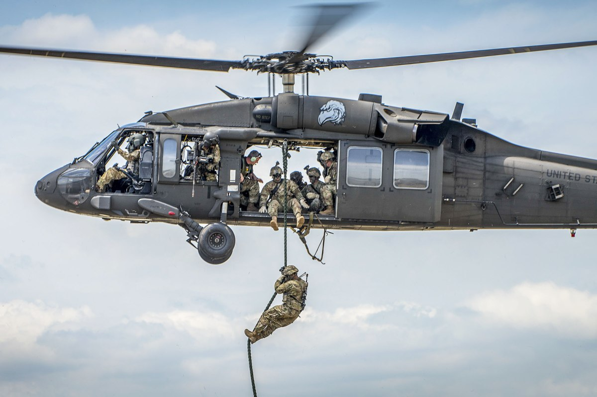
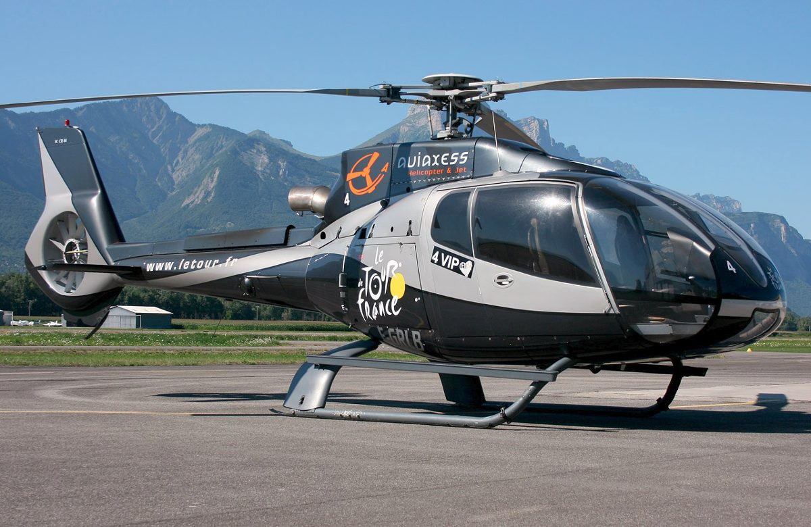

A helicopter is a type of aircraft. It uses rotating, or spinning, 
wings called blades to fly. Rotating blades, or a rotor,
let helicopters do things airplanes cannot.
In order to fly, an object must have "lift." Lift is what pushes something up. Lift is made by wings. Wings have a curved shape on top and are flatter on the bottom. That shape makes air flow over the top faster than under the bottom. The faster air on top of the wing makes suction on the top of the wing and the wing moves up. Airplanes get lift from their wings. A helicopter's rotor blades are spinning wings. A helicopter moves air over its rotor by spinning the blades. The rotor makes the lift that carries the helicopter up.
Helicopters can do things airplanes cannot. They can move straight up or down. Most airplanes cannot do this. Helicopters can take off or land without a runway. They can turn in the air in ways airplanes cannot. Helicopters can fly backwards or sideways. They can also hover in one spot in the air without moving.
Helicopters can be used for many things. They can be used as flying ambulances to carry patients. They can be loaded with water to fight large fires. Military forces use helicopters to move troops and get supplies to ships. Helicopters can move large objects from place to place. Helicopters can rescue people in hard-to-reach places like mountains or in oceans. Television and radio stations use helicopters to fly over cities and report on traffic. Helicopters are used by police and by people on vacation. These uses are just some of the many things that can be done with helicopters.